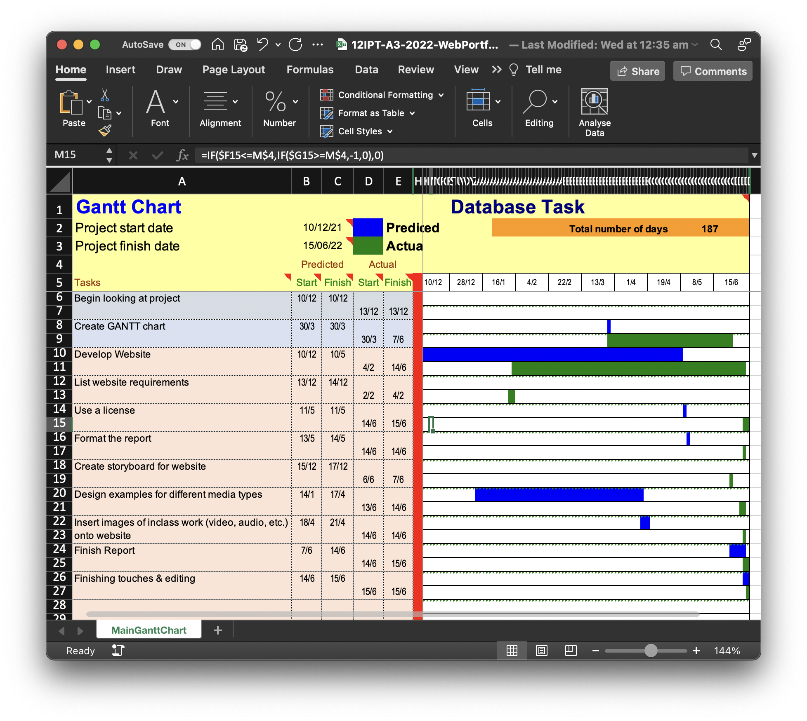
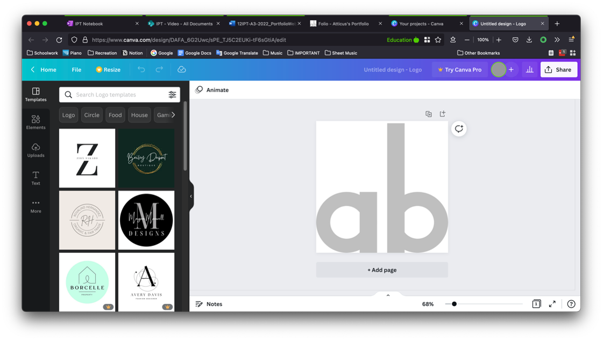
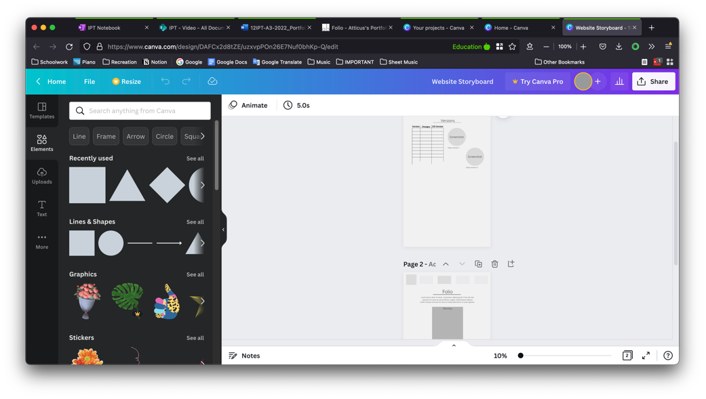
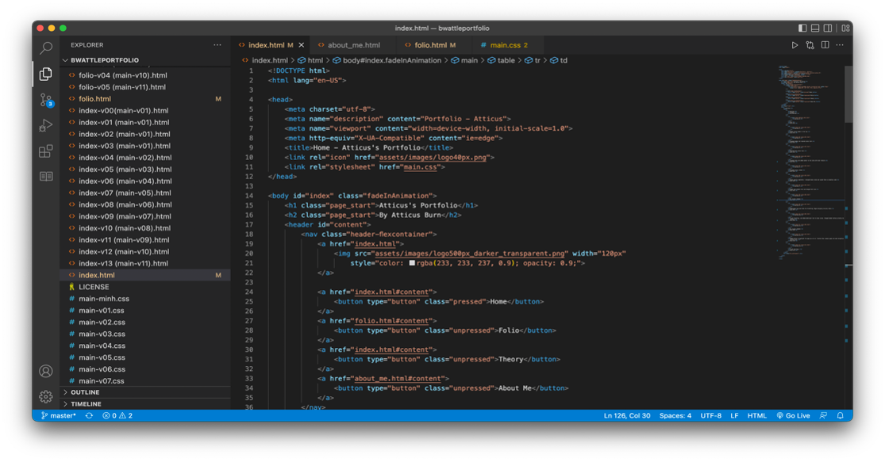

A GANTT Chart was created, albeit quite late in the project. The GANTT Chart was the main planning tool that was used, but it was ultimately not very effective.
To design the logo, the online website “Canva” was used, as it provided a simple interface with which I could experiment and create an image, where each element was dragged in to the document, and could be edited in size, shape, colour, position, etc. When the project was started originally, the logo was designed in Photoshop, but this logo was scrapped and a new logo was made in Canva, after the website was redesigned, as the old logo did not match the colour scheme of the new website. The main competition for me was with Photopea, a free online version of Photoshop, as they both had the advantages of being completely free and accessible through my browser, but Canva was ultimately chosen because it facilitates more experimentation with its intuitive user interface, and its ability to easily dynamically edit elements.
Canva was also used to design the website storyboard, to create an idea of what the website should look like.
The website was written in Visual Studio Code as opposed to the many available alternatives because I was already using it for other projects, and as a result had become familiar with how to use it. Visual Studio Code has a simple interface with a side bar listing files, and a main section containing all the text and code that is contained in a file. Despite this simple interface, VSCode has a multitude of features allowing it to be used for any coding or scripting project, such as its out-of-the-box Github integration capabilities, as well as it’s abilities to support most programming languages, with addons able to be installed to allow for full customisation of the website. While these features are contained on its competitors, Adobe Dreamweaver and Visual studio, the simple and intuitive interface ultimately made me choose it over others. Adobe Dreamweaver was a strong competitor as it has an automatically updating representation of the web page, but this was ultimately not needed, as a copy of the file was open on the browser, and any changes that were made could be seen by reloading the page.
The website elements, located in the “Folio” section of the page were designed using a multitude of different software. The video / animation was created using iMovie, Photopea, and “FFmpeg”. iMovie is an Apple-owned video editing software which comes free with a Mac computer, and contains a variety of tools for editing a video, although its toolset is quite limited when compared with a more advanced editing software, such as Adobe Premier Pro. iMovie was chosen to edit the video because I did not have to download any additional software to use it, and it had a simple interface which allowed me to easily design the video the way that I had imagined it, although I had to use work-arounds to produce the final gif. Photopea is a free online replica of Photoshop, which has all of the functionality that Adobe Photoshop has. I used this to draw and assemble each frame of the animation, and I used iMovie to put these frames together. After the video had been created, I converted it to a gif using the command line tool “FFmpeg”. FFmpeg is a versatile file conversion tool which can be accessed through the command line once installed, and supports a wide range of file formats. The main competitors with FFmpeg would be the multitude of online conversion websites, most of which are sketchy and not trustworthy. FFmpeg was used because these websites, while simpler to use and do not require installing any software, can be slow to convert files, and could potentially cause harm to computers. To design the audio file in the folio, I used audacity to mix multiple sound effects into one audio file. Audacity is a free open source audio mixing and editing tool which is widely acclaimed and trusted. Audacity was used as opposed to other audio editing software such as GarageBand or FL Studio because it has a simple interface, and is much more versatile for audio editing in general, and it is also free and lightweight.